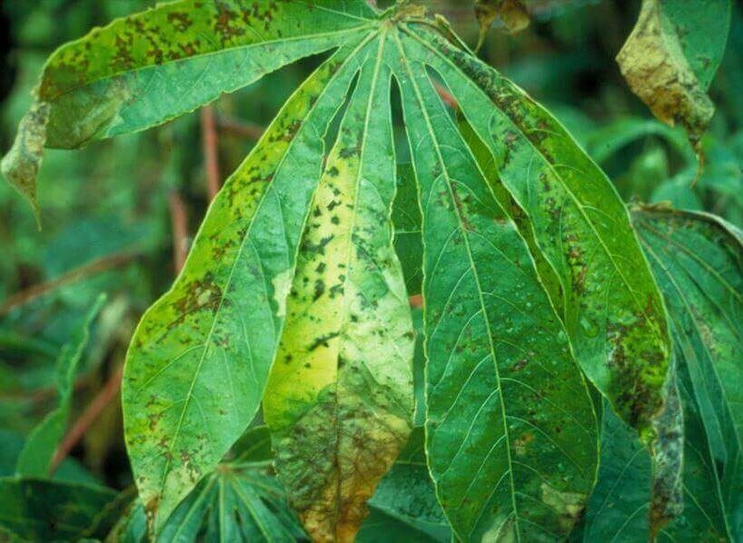

Cassava Bacterial Blight Disease: Prevention and control
Xanthomonas axonopodis pv. manihotis is capable of infecting most members of the
plant genus Manihot. Consisting of about 100 species, the most economically
significant species is easily the widely cultivated woody shrub, Manihot
esculenta, known colloquially as the cassava plant. In cassava, symptoms
vary in a manner that is unique to this pathogen.(www.wikipedia.org)
Symptoms include blight, wilting, dieback, and vascular necrosis. A more
diagnostic symptom visible in cassava with X. axonopodis infection is angular
necrotic spotting of the leaves—often with a chlorotic ring encircling the
spots. These spots begin as distinguishable moist, brown lesions normally
restricted to the bottom of the plant until they enlarge and coalesce—often
killing the entire leaf. A further diagnostic symptom often embodies itself as
pools of gum exudate along wounds and leaf cross veins. It begins as a sappy
golden liquid and hardens to form an amber coloured deposit. (www.wikipedia.org)
PREVENTION AND CONTROL
Use Resistant Varieties
In areas where the CBB is endemic, farmers must use CBB resistance varieties if
they are to realize sustainable yields.
Roguing of Plants
Farmers cultivating susceptible varieties must regularly search and destroy the
plants showing symptoms of the disease by burning them. This activity must follow the first few incidents of rains after the dry season. Early detection and destruction, can prevent or reduce the rate of spread of disease on the farm.
It is, however, safe to eat tubers of CBB infected plants.
Practise Land Fallow
In cases of an outbreak on the whole farm, farmers must harvest roots
immediately and destroy the whole plants (stem, leaves, etc) by burning. They
may also plough them deep into the soil. Leave the land to fallow for a minimum
of 3 years in both cases. The bacterium for CBB is not able to survive outside
the host for long periods.
Practise Crop Rotation
In areas where land is scarce, farmers may plant legumes and grains on the
same
land after the destruction of infected plants. The farmer may return after 3
seasons to grow cassava.
Apply Quarantine Measures
Authorities must monitor the movement of materials across borders to ensure the
safety with respect to diseases. This will prevent the introduction of diseases
to new areas.
Use of Healthy Planting Material
Farmers must consciously harvest stems from healthy plants completely free of
any of the described symptoms of the disease. It is generally wise to avoid
using planting materials from any farm suspected to be under CBB attack even
if symptoms of the disease have not been observed on plants.
Control Pest
Grasshoppers and other insects that can serve as carriers of the bacterium
from farm to farm must be controlled using environmentally friendly measures.
Controlling grasshopper movement after the early first rains of the wet season
can reduce the spread of Cassava Bacterial Blight.
About Me
I have been an avid gardener since 2011, specializing in container gardening
and pest and disease control.